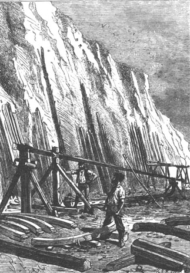
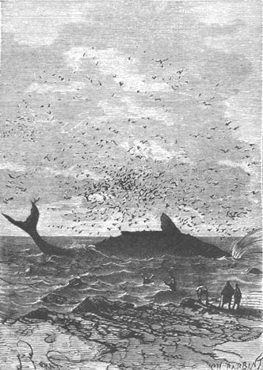
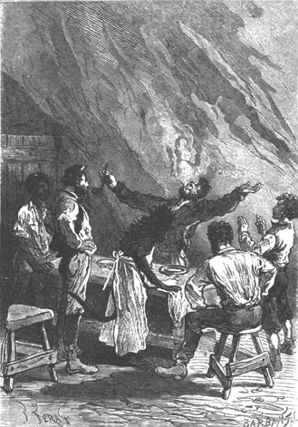

When Pencroff got an idea into his head, he would not rest until he executed it. Now, he wanted to visit Tabor Island and since a boat of a certain size was necessary for this trip, he would construct the aforesaid boat.
This is the plan which was drawn up by the engineer in agreement with the sailor.
The keel of the boat would measure thirty five feet and the beam nine feet—which would make it a fast sailer provided its bottom and underwater lines were well made—and it would not draw more than six feet, a level of water sufficient to maintain it against the drift. It would be decked along its entire length, pierced by two hatchways which would give access to two cabins separated by a partition, and rigged as a sloop with a spanker, a staysail, a foresail, a forestaysail, and a jib. These are very manageable sails conducting themselves well against squalls and holding on firmly when close-hauled. Finally, its hull would be carvel-built, that is to say that the planking would be flush instead of overlapped. As to its ribs, they would heat press it into place after adjusting the planking, which would be mounted on dummy frames.
What wood would be employed in the construction of this boat, elm or fir, both being abundant on the island? They decided on the fir, a wood which is a little “cracked,” as the carpenters would say, but which is easy to work and can withstand the water as well as the elm.
These details concluded, it was decided that, since the return of the fine season was six months away, that only Cyrus Smith and Pencroff would work on the boat. Gideon Spilett and Herbert would continue to hunt, and neither Neb nor Master Jup, his assistant, would abandon the domestic activity that had devolved upon them.
The trees were immediately chosen, felled and branches removed, and sawed into planks, since they had been able to make some long saws. Eight days later, in a recess of land that existed between the Chimneys and the wall, a shipyard was built, and a keel thirty five feet in length, with a sternpost at the rear and a stem up front, was stretched out on the sand.

A keel, thirty five feet in length...
Cyrus Smith was not treading in the dark in this new activity. He knew about maritime construction as he knew about nearly everything else, and it was on paper that he first made the design for the boat. Besides, he was ably seconded by Pencroff, who had worked for several years in a Brooklyn shipyard and knew the practical end of the business. It was only after hard calculations and mature thought that the dummy frames were fitted to the keel.
Pencroff was all afire to do well at this new enterprise and he would not for a moment think of abandoning it.
Only one thing could tear him away from his shipyard, and for only a day. It was the second harvest of corn, which was done on the 15th of April. It was as successful as the first and gave the proportion of grains announced in advance.
“Five bushels, Mister Cyrus,” said Pencroff, after having scrupulously measured his riches.
“Five bushels,” replied the engineer, “and at one hundred thirty thousand grains per bushel, that makes six hundred fifty thousand grains.”
“Well, we will sow it all this time,” said the sailor, “less a little reserve however.”
“Yes, Pencroff, and if the coming harvest gives a proportional yield, we will have four thousand bushels.”
“And we will eat bread?”
“We will eat bread.”
“But we will have to make a mill.”
“We will make a mill.”
The third cornfield was thus incomparably more extensive than the first two, and the ground, prepared with extreme care, received the precious seed. That done, Pencroff returned to his work.
During this time Gideon Spilett and Herbert hunted in the neighborhood and they ventured rather deeply into the still unknown parts of the Far West, their guns loaded with shot, ready for any unpleasant encounter. It was an inextricable medley of magnificent trees pressed against each other because of a lack of space. The exploration of these wooded masses was extremely difficult and the reporter never chanced there without carrying the pocket compass, because the sun could hardly be seen through the thick branches and it would have been difficult to find one’s way. It happened, naturally, that game was more rare in these regions where there was little liberty of movement. However, three large herbivores were killed during this last half of April. These were some koalas, a specimen of which the colonists had already seen to the north of the lake, who stupidly allowed themselves to be killed among the large branches of some trees on which they had sought refuge. Their hides were brought to Granite House and with the aid of sulphuric acid, they were subjected to a sort of tanning which rendered them usable.
A discovery, precious from another point of view, was also made during one of these excursions thanks to Gideon Spilett.
It was the 30th of April. The two hunters had pushed their way into the southwest of the Far West when the reporter, preceding Herbert by some fifty paces, arrived at a sort of clearing in which the trees, having more space, allowed a few rays to penetrate.
At first Gideon Spilett was surprised by the odor from certain plants with straight cylindrical branchy stems which produced very small clustered berries. The reporter tore off one or two of these stems and returned to the lad, saying to him:
“What can this be, Herbert?”
“And where did you find this plant, Mister Spilett?”
“There in the clearing where it grows abundantly.”
“Well, Mister Spilett,” said Herbert, “this is a discovery that will assure you Pencroff’s eternal gratitude.”
“It is tobacco then?”
“Yes, and if it is not of the first quality, it is none the less tobacco.”
“Ah! Worthy Pencroff! How happy he’ll be! But he will not smoke it all, the devil! He will give us our share!”
“Ah! I have an idea, Mister Spilett,” replied Herbert. “Let us not say anything to Pencroff. We will take the time to prepare these leaves and one fine day we will present him with a full pipe.”
“And on that day, Herbert, our worthy companion will have nothing more to wish for in this world.”
The reporter and the lad took a good quantity of the precious plant and they returned to Granite House where they brought it in deceitfully with as much precaution as if Pencroff had been the most severe of customs inspectors.
Cyrus Smith and Neb were taken into confidence and the sailor suspected nothing during all of the rather long time that was needed for drying the leaves, chopping them up, and subjecting them to a certain torrefaction over some hot stones. This required two months but all these manipulations were made without Pencroff’s knowledge because, occupied with the construction of the boat, he only returned to Granite House when it was time to go to bed.
One time, however, his favorite activity was interrupted, on the 1st of May, by a fishing adventure in which all the colonists took part.
For several days they had observed an enormous animal swimming in the waters of Lincoln Island, two or three miles out to sea. It was a whale of the largest size, belonging to a southern species called “Cape Whale.”
“How lucky it would be if we could get hold of it,” cried the sailor. “Ah! If we had a suitable boat and a working harpoon, how I would say: ‘Let us chase the animal because it is worth the trouble that it takes!’”
“Well, Pencroff,” said Gideon Spilett, “I would like to see you handle the harpoon. That would be interesting.”
“Very interesting and not without danger,” said the engineer, “but since we do not have the means to attack this animal, it is useless for us to preoccupy ourselves with it.”
“I am astonished,” said the reporter, “to see a whale in this relatively high latitude.”
“Why so, Mister Spilett?” replied Herbert. “We are precisely in that part of the Pacific that English and American fisherman call the ‘Whale Field,’ and it is here, between New Zealand and South America, that the whales of the southern hemisphere are met with in the greatest number.”
“Nothing is more true,” replied Pencroff, “and what surprises me is that we have not seen any others. But this is of little importance since we can’t get near it.”
And Pencroff returned to his work, but not without a sigh of regret because in every sailor there is a fisherman, and if the pleasure of fishing is in direct ratio to the size of the animal, one can image what a whaler feels in the presence of a whale.
If he could only have had this pleasure! But they could not conceal from themselves the fact that such a prey would be very profitable to the colony because the oil, the blubber and the whalebones would find many uses.
Now it happened that the whale seemed to have no wish to leave the waters of the island. Herbert and Gideon Spilett, when they were not hunting, and Neb while watching his stoves, did not leave the telescope and observed all the movements of the animal, either from the windows of Granite House or from Grand View Plateau. The cetacean, soundly entrenched in the vast Union Bay, plowed rapidly from Cape Mandible to Cape Claw, propelled by its very powerful caudal fin. It moved with sudden jolts with a speed that sometimes approached up to twelve miles per hour. Sometimes it also approached so near to the island that they could see it in detail. It was definitely a southern whale, entirely black, and its head was more slumped than that of the northern whale.
They also saw it throw out through its blow-holes a cloud of vapor to a great height ... or was it water, because, strange as it seems, naturalists and whalers are still not in agreement on this subject. Is it air or is it water which is ejected? It is generally admitted that it is vapor which, condensing upon sudden contact with the cold air, falls down as rain.
However, the presence of this marine mammal preoccupied the colonists. It especially agitated Pencroff and distracted him during his work. He ended by yearning for this whale like something forbidden to a child. At night he talked about it in his sleep and certainly, if he had the means to attack it, if the boat had been ready to take to sea, he would not have hesitated to go out in pursuit.
But what the colonists could not do, chance did for them, and on the 3rd of May, Neb’s shouts from his kitchen window announced that the whale was stranded on the shore.
Herbert and Gideon Spilett, who were about to go hunting, left their guns, Pencroff threw away his ax, Cyrus Smith and Neb joined their companions, and everyone quickly ran to where the stranding had taken place.
The stranding occurred on the beach at Flotsam Point, three miles from Granite House, at high tide. It was therefore probable that the cetacean could not easily disentangle himself. In any case they must hurry in order to cut off its retreat if this became necessary. They ran with picks and iron spears, crossed the bridge over the Mercy, redescended the right bank of the river, took to the shore, and in less than twenty minutes the colonists were near the enormous animal above which a world of birds already swarmed.
“What a monster,” cried Neb.

“What a monster,” cried Neb.
And the expression was justified because this was a southern whale, eighty feet long, a giant of its species, which would not weigh less than one hundred fifty thousand pounds.
However, the stranded monster did not move nor did it struggle to get back to the sea while it was still high tide.
The colonists soon had the explanation for its immobility when, at low tide, they were able to go around the animal.
It was dead, with a harpoon sticking into its left side.
“Are there whalers in our waters,” Gideon Spilett said immediately.
“Why do you say that?” asked the sailor.
“Since this harpoon is still there...”
“Ah! Mister Spilett, that proves nothing,” replied Pencroff. “Whales can travel thousands of miles with a harpoon in their sides, and this one could have been struck in the North Atlantic and come to die in the South Pacific, that would not be astonishing!”
“However...,” said Gideon Spilett, not satisfied with Pencroff’s statement.
“That is perfectly possible,” replied Cyrus Smith, “but let us examine this harpoon. Perhaps, as is customary, the whalers have engraved the name of their vessel on it.”
Pencroff pulled out the harpoon from the animal’s side and read this inscription on it:
Maria-Stella Vineyard.
“A vessel from the Vineyard! A vessel from my country!” he cried. “The Maria-Stella! A fine whaler, believe me! I know that ship! Ah! My friends, a vessel from the Vineyard, a whaler from the Vineyard.”1
And the sailor, swinging the harpoon, repeated not without emotion, this name which had touched his heart, this name from his native land.
But since they could not wait for the Maria-Stella to come and reclaim the animal harpooned by it, they resolved to proceed to cut it up before it became decomposed. The birds of prey, who had watched this rich prey for several days, wanted to take possession of it without further delay, and they had to scare them away with gunshots.
This whale was a female whose breasts would furnish a large quantity of milk which, in the opinion of the naturalist Dieffenbach, can pass as cow’s milk, since it differs from it neither in taste, nor color, nor density.
Pencroff had formerly served on a whaling vessel and he was able to supervise the cutting operation—a rather unpleasant operation which lasted three days, but which none of the colonists avoided, not even Gideon Spilett whom, as the sailor said, would end by becoming “a very good castaway.”
The blubber, cut into parallel slices two and a half feet thick, then divided into pieces weighing a thousand pounds each, were melted in large earthen vases carried to the very spot—because they did not want to smell up the approaches to Grand View Plateau—and in this fusion it lost about a third of its weight. But there were lavish quantities: The tongue alone gave six thousand pounds of oil and the lower lip four thousand. Then, with this blubber, which would provide stearin and glycerin for a long time, they still had the whalebones which would doubtless find some application even though no umbrellas nor corsets were used at Granite House. The upper part of the mouth of the cetacean was furnished, on both sides, with eight hundred very elastic horned blades of a fibrous texture and tapered like two large combs with teeth six feet long, which served to catch the thousands of animacules, small fishes and mollusks on which the whale fed.
With the operation completed to the great satisfaction of the operators, the remains of the animal were left to the birds, who would make it disappear to its last vestiges, and the daily work was resumed at Granite House.
However, before returning to the shipyard, Cyrus Smith had the idea of making certain contrivances which vividly excited the curiosity of his companions. He took a dozen of the whalebones and cut them into six equal parts, sharpening their ends.
“To what use will you put this, Mister Cyrus,” asked Herbert, “when you have finished this operation?”
“To kill wolves, foxes, and even jaguars,” replied the engineer.
“Now?”
“No, this winter, when we will have ice.”
“I do not understand” replied Herbert.
“You will understand, my child,” replied the engineer. “This device is not my invention and it is frequently used by Aleutian hunters in Russian America. These whalebones that you see, my friends, well, when it is below freezing, I will bend them, sprinkle them with water until they are entirely coated with a layer of ice which will keep them curved, and I will scatter them on the snow after having previously covered them with a layer of blubber. Now, what will happen if a hungry animal swallows one of these baits? The heat from his stomach will melt the ice and the whalebone will expand and pierce it with its sharp ends.”
“That is ingenious!” said Pencroff.
“And it will save us powder and shot,” replied Cyrus Smith.
“This will be worth more than traps,” added Neb.
“Let us wait then for winter!”
“Let us wait for winter.”
However, the construction of the vessel advanced and toward the end of the month, half of the planking was completed. Already they could see that it would have an excellent shape and that it would take well to the sea.
Pencroff worked with a zest without parallel, and he needed his robust nature to resist these fatigues; but his companions secretly prepared a reward for his pains, and on the 31st of May he experienced one of the greatest joys of his life.
On this day, when he finished dinner and was about to leave the table, Pencroff felt a hand on his shoulder.
It was the hand of Gideon Spilett who said to him:
“One moment, Master Pencroff, don’t go like that! You have forgotten your dessert.”
“Thanks, Mister Spilett,” replied the sailor, “I am returning to work.”
“Well, a cup of coffee, my friend?”
“Nothing else.”
“A pipe then?”
Pencroff suddenly got up and his fine large body paled when he saw the reporter present him with a full pipe and Herbert with a burning cinder.
The sailor wanted to say a word, but without success; then seizing the pipe, he carried it to his lips. He applied the cinder and gulped five or six times.
A bluish cloud and a fragrance developed, and from within the depths of this cloud, they heard a delirious voice which kept repeating:
“Tobacco, real tobacco!”

“Tobacco, real tobacco!”
“Yes, Pencroff,” replied Cyrus Smith, “and excellent tobacco at that!”
“Oh! Divine Providence! Sacred Author of all things!” cried the sailor. “Nothing is lacking on our island!”
And Pencroff smoked and smoked and smoked.
“And who made this discovery?” he finally asked. “You, Herbert, no doubt?”
“No, Pencroff, it was Mister Spilett.”
“Mister Spilett!” cried the sailor, squeezing the chest of the reporter who had never suffered such an embrace.
“Oof! Pencroff,” replied Gideon Spilett, recovering his breath, “A quick compromise. Give a part of your thanks to Herbert, who recognized this plant, to Cyrus, who prepared it, and to Neb, who took pains to guard our secret well!”
“Well, my friends, I will repay you some day!” replied the sailor. “Now we are friends for life!”